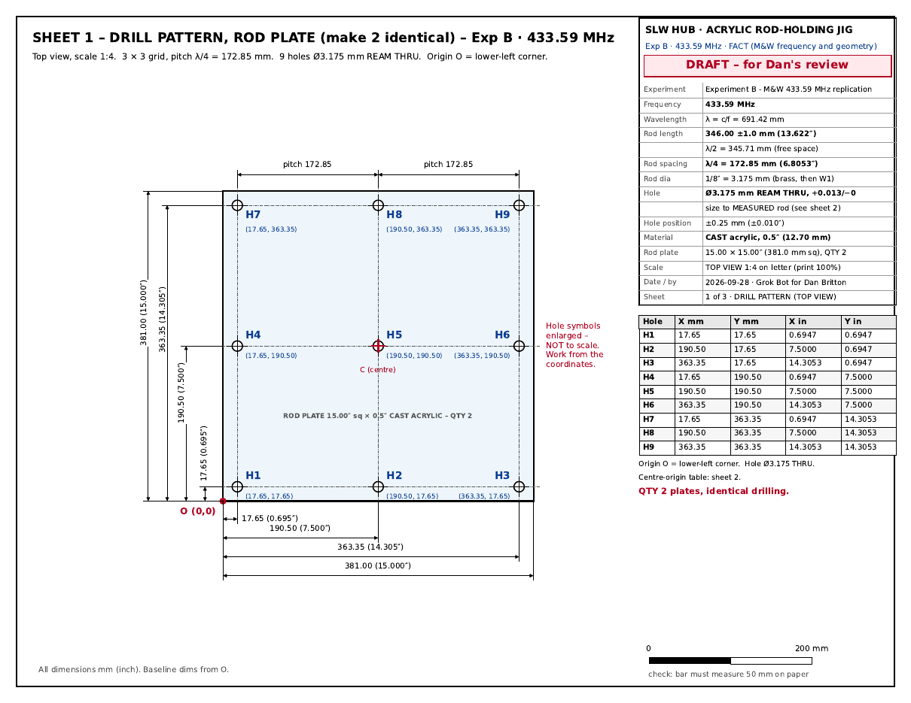
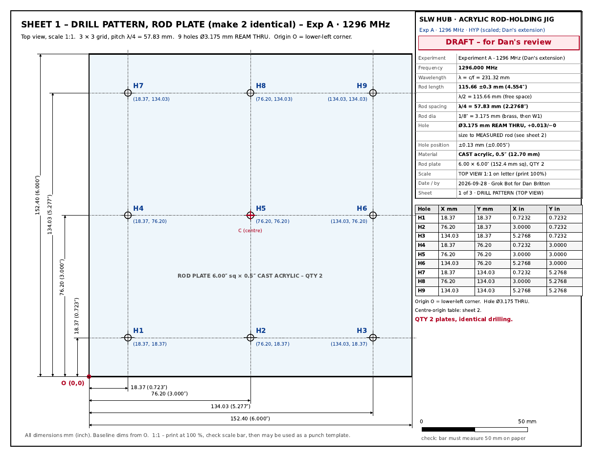
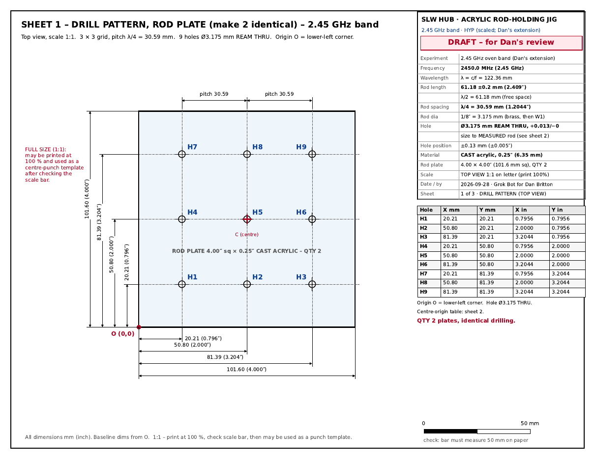

Analysis page · shop drawings · Experiment B (M&W) + Experiment A and 2.45 GHz extensions
Acrylic Rod-Holding Jigs for the Monstein & Wesley Polarizer-Analyzer
Three machine-shop drill patterns (one per frequency) for the plastic plates that hold nine parallel λ/2 rods in a 3 × 3 grid. The rods pass through one plate at mid-length, as in the M&W photo. You need two identical plates per frequency: one for the horizontal-rod array (turns on a turntable) and one for the vertical-rod array (fixed).
1 · Drawings
Experiment B · 433.59 MHz

Jig_ExpB_433MHz.pdf · 3 letter sheets (drill pattern · section + hole detail + tables · cut list + assembly + notes)
Experiment A · 1296 MHz

Jig_ExpA_1296MHz.pdf · 3 letter sheets (drill pattern · section + hole detail + tables · cut list + assembly + notes)
2.45 GHz band

Jig_2450MHz.pdf · 3 letter sheets (drill pattern · section + hole detail + tables · cut list + assembly + notes)
Sheet 1 for Exp A and 2.45 GHz is full size (1:1 on US Letter). Print it at 100 % and check the scale bar. Sheet 1 for Exp B is drawn at 1:4, because a 15″ plate does not fit on Letter. Its full-size coordinates are in the table. Numbers: numbers.json.
2 · Geometry check
| Item | Request | M&W 2002 (EPL 59(4) 514) | Butterworth et al. 2013 (446 MHz) | Used here |
|---|---|---|---|---|
| Rods | 9, half-wave | FACT "cubic array of 9 wires of length λ/2 (34.6 cm)", brass (p. 516, Fig. 2) | FACT "nine wires in 3 × 3 arrays, a half-wavelength long" | 9 × λ/2 (matches) |
| Spacing | λ/4 | Not stated | FACT "a quarter-wave apart" | λ/4, sourced from Butterworth, not M&W |
| Arrays | one horizontal, one vertical, rotatable | FACT Fig. 2 is a single rotatable 3×3, "turned by hand or … disc record player". Text: "Two such arrays with wires perpendicular to the direction of propagation and to each other serve as a filter" | FACT "one horizontal and one vertical. The horizontal polarizer can be rotated." | 2 arrays per frequency; H rotates, V fixed |
| Mounting | not given | FACT (photo) horizontal rods through one vertical wooden board at about mid-length | not described | one plate at rod mid-length |
| Ball antenna | 6 cm | FACT "ball antenna, 6 cm diameter" (abstract, Fig. 1) | FACT solid 3″ (76 mm) Al balls; M&W described as r = 30 mm | not part of the jig (hub B ball is KB-2016, 2.50″) |
| Rod dia, board size, array position | not given | Not stated | Not stated | IDEA 1/8″ rods; plate sizes below |
HYPOTHESIS "Cubic": a 3 × 3 grid at λ/4 pitch is λ/2 across, the same as the rod length, so the nine rods fill a λ/2 cube. This is our reading of the word and supports Butterworth's λ/4. Discrepancy flagged: the request's "spaced λ/4" and "one horizontal, one vertical" wording comes from Butterworth's reconstruction, not from M&W. M&W's measured curve (Fig. 3) used one rotating array.
3 · Frequencies and sources
- FACT Experiment B = 433.59 MHz: the M&W frequency (abstract, p. 515). Also on hub monstein.html and setup.html, Dipole Detector DD-433, and the rod-fixtures rev A drawings.
- Experiment A = 1296.000 MHz: hub setup.html ("1296.000 MHz", lines 78/102), shop-drawing.html Sheet A, sleeve-balun.html, DD-1296 (dipole_numbers.json), and the Hively 1.3 GHz protocol ("1296.000 MHz" is the preferred lab carrier). 1294.5 MHz is not on the hub or in the ledger (checked hub origin/main 8e53b6a). The only 1294.5 on the box is in hively-1.3ghz-faraday-lab-protocol.md line 107: "do not put a CW carrier on FM simplex 1294.5". The jig uses 1296.000. HYPOTHESIS scaling to Exp A is Dan's extension. The hub (shop-drawing.html:506, monstein.html) still says polarizer rods are Exp B only.
- 2.45 GHz = 2450.0 MHz: DD-2450 build sheet, rod-fixtures Future_2450MHz, and the oven magnetron nominal. HYPOTHESIS scaling. Use the jig outside the oven only. Never put rods inside a running microwave oven.
4 · Numbers per frequency
| Experiment B · 433.59 MHz | Experiment A · 1296 MHz | 2.45 GHz band | |
|---|---|---|---|
| Frequency | 433.59 MHz FACT | 1296.000 MHz HYPOTHESIS | 2450.0 MHz HYPOTHESIS |
| λ = c/f | 691.42 mm | 231.32 mm | 122.36 mm |
| Rod length (λ/2, free space) | 346.00 ± 1.0 mm (13.622″) · M&W 34.6 cm | 115.66 ± 0.3 mm (4.554″) | 61.18 ± 0.2 mm (2.409″) |
| Pitch (λ/4) | 172.85 mm (6.8053″) | 57.83 mm (2.2768″) | 30.59 mm (1.2044″) |
| Rod diameter | 1/8″ = 3.175 mm (brass, then W1) | 1/8″ = 3.175 mm (brass, then W1) | 1/8″ = 3.175 mm (brass, then W1) |
| Hole | Ø3.175 mm ream thru, +0.013/−0 mm (size to measured rod) | Ø3.175 mm ream thru, +0.013/−0 mm (size to measured rod) | Ø3.175 mm ream thru, +0.013/−0 mm (size to measured rod) |
| Hole position tol. | ±0.25 mm (±0.010″) | ±0.13 mm (±0.005″) | ±0.13 mm (±0.005″) |
| Rod plate (qty 2) | 15.00″ sq × 0.5″ cast acrylic (381.0 mm, t = 12.70 mm) | 6.00″ sq × 0.5″ cast acrylic (152.4 mm, t = 12.70 mm) | 4.00″ sq × 0.25″ cast acrylic (101.6 mm, t = 6.35 mm) |
| Edge margin (hole centre) | 17.65 mm (5.6× rod dia) | 18.37 mm (5.8× rod dia) | 20.21 mm (6.4× rod dia) |
| Rod protrusion each side | 166.65 mm | 51.48 mm | 27.41 mm |
| Plate t / rod L | 0.037 | 0.110 | 0.104 |
| V-array leg height | 7.625″ (194 mm) | 3.125″ (79 mm) | 2.125″ (54 mm) |
| Acrylic area (net / +20 %) | 912.8 / 1095.3 in² | 154.5 / 185.4 in² | 74.0 / 88.8 in² |
| Acrylic mass | 8.90 kg | 1.51 kg | 0.36 kg |
| Buy | 1 × 24×48″ × ½″ | 1 × 12×24″ × ½″ | 1 × 12×12″ × ¼″ |
| Drawing scale (sheet 1) | 1:4 + full-size table | 1:1 (template) | 1:1 (template) |
The only electrical formula is λ = c/f with c = 299 792 458 m/s. Rod length is the free-space λ/2, which is M&W's own definition: 34.6 cm at 433.59 MHz, compared with 345.71 mm computed; the hub cuts 346 ± 1 mm. These are polarizer rods, not the resonance-shortened Dipole Detector elements. Hole grid: 3 × 3 at λ/4, centred on the plate.
Experiment B · 433.59 MHz: hole coordinates (mm)
| Hole | X from corner O | Y from corner O | X from centre C | Y from centre C |
|---|---|---|---|---|
| H1 | 17.65 | 17.65 | -172.85 | -172.85 |
| H2 | 190.50 | 17.65 | +0.00 | -172.85 |
| H3 | 363.35 | 17.65 | +172.85 | -172.85 |
| H4 | 17.65 | 190.50 | -172.85 | +0.00 |
| H5 | 190.50 | 190.50 | +0.00 | +0.00 |
| H6 | 363.35 | 190.50 | +172.85 | +0.00 |
| H7 | 17.65 | 363.35 | -172.85 | +172.85 |
| H8 | 190.50 | 363.35 | +0.00 | +172.85 |
| H9 | 363.35 | 363.35 | +172.85 | +172.85 |
Experiment A · 1296 MHz: hole coordinates (mm)
| Hole | X from corner O | Y from corner O | X from centre C | Y from centre C |
|---|---|---|---|---|
| H1 | 18.37 | 18.37 | -57.83 | -57.83 |
| H2 | 76.20 | 18.37 | +0.00 | -57.83 |
| H3 | 134.03 | 18.37 | +57.83 | -57.83 |
| H4 | 18.37 | 76.20 | -57.83 | +0.00 |
| H5 | 76.20 | 76.20 | +0.00 | +0.00 |
| H6 | 134.03 | 76.20 | +57.83 | +0.00 |
| H7 | 18.37 | 134.03 | -57.83 | +57.83 |
| H8 | 76.20 | 134.03 | +0.00 | +57.83 |
| H9 | 134.03 | 134.03 | +57.83 | +57.83 |
2.45 GHz band: hole coordinates (mm)
| Hole | X from corner O | Y from corner O | X from centre C | Y from centre C |
|---|---|---|---|---|
| H1 | 20.21 | 20.21 | -30.59 | -30.59 |
| H2 | 50.80 | 20.21 | +0.00 | -30.59 |
| H3 | 81.39 | 20.21 | +30.59 | -30.59 |
| H4 | 20.21 | 50.80 | -30.59 | +0.00 |
| H5 | 50.80 | 50.80 | +0.00 | +0.00 |
| H6 | 81.39 | 50.80 | +30.59 | +0.00 |
| H7 | 20.21 | 81.39 | -30.59 | +30.59 |
| H8 | 50.80 | 81.39 | +0.00 | +30.59 |
| H9 | 81.39 | 81.39 | +30.59 | +30.59 |
5 · Hole fit in acrylic
Spec on the drawings IDEA: ream to the measured rod diameter, nominal 0.1250″ (3.175 mm), with tolerance +0.0005/−0.0000″ (+0.013/−0 mm). That gives a snug (transition) fit, not a press fit. The rods are held by silicone O-rings (AS568-005) on both faces. Rods must be swappable, since Hively's plan is brass first and then W1 in the same geometry, and they must stay electrically floating. Drilling: pilot Ø3.0 mm (or #32), peck with water mist, use a dubbed zero-rake bit and a sacrificial backer, then ream. Chamfer 0.4 × 45° on both faces. Anneal before solvent cementing.
Why not the requested 0.05–0.10 mm undersize? Acrylic makers advise against press fits and against high local stress: "design loads should not exceed 750 psi" for continuous loading (American Plastics Corp. acrylic data); Plaskolite and Perspex guides say to oversize holes and minimise stress. We estimated the hoop stress at the bore for a rigid rod in a thick plate as σ ≈ E·(δ/D)/(1+ν), with E ≈ 3.1 GPa and ν ≈ 0.37 ASSUMPTION:
| Interference (diametral) | mm | hoop strain | hoop stress psi | ÷ 750 psi |
|---|---|---|---|---|
| requested 0.05 mm under | 0.0500 | 1.57 % | 5,168 | 6.9× |
| requested 0.10 mm under | 0.1000 | 3.15 % | 10,337 | 13.8× |
| HDPE fixture #31 (0.120 in) 0.127 mm under | 0.1270 | 4.00 % | 13,128 | 17.5× |
| light press 0.013 mm (0.0005 in) | 0.0127 | 0.40 % | 1,313 | 1.8× |
| 0.0075 mm (0.0003 in) | 0.0076 | 0.24 % | 788 | 1.1× |
750 psi continuous corresponds to only about 7.3 µm of interference, which a drilled hole cannot reliably hold. So the drawings specify a snug fit plus O-rings. The #31 (0.120″) light press used on the earlier HDPE fixtures works in HDPE because it is ductile. It must not be carried over to acrylic. Fallback if Dan wants a press fit: measured rod diameter minus 0.0005″ (about 1,300 psi), on cast acrylic only, annealed, and tested on the coupon first.
6 · Design choices
- FACT M&W Fig. 2 shows rods passing through one board at mid-length. IDEA We follow that: one plate per array, rods centred with equal protrusion.
- IDEA Not a solid block. The hub's 380 × 380 × 50–75 mm block would weigh about 9–13 kg in acrylic and put plastic over 14–22 % of each rod. Not two end plates either: that would put plastic at the rod tips and departs from the photo. Plate thickness: ½″ for Exp B (t/L 0.037) and Exp A (0.110), ¼″ for 2.45 GHz (0.104).
- IDEA H array: the rod plate is cemented into a half-depth dado in a square base, which sits on a turntable, so rotating it changes φ. V array: the rod plate is horizontal, cemented between two legs. Use solvent cement (Weld-On 16/4) only. No metal fasteners near the rods.
- IDEA 1/8″ rods for all three frequencies, for practical and structural reasons: that is the stock on hand or ordered (brass, and W1 drill rod), and one reamer serves every plate. The half-rod self-weight sag is only 0.13 mm for brass at 433 MHz. 1/16″ would bend in handling. The rod material enters M&W's model only through σ (eq. 7).
- IDEA Keep steel (turntable bearing, screws) at least λ/(2π) from the nearest rod: 110 / 37 / 20 mm. This is by analogy with the hub's "keep ≳ λ/(2π) from either ball". Add a wood or plastic riser if needed.
- Change from earlier work: the rod-fixtures rev A drawings (2026-09-26) were HDPE (McMaster 9785T833 6×6×¾ ×6 and 8612N17 15×15×¾ ×3, already delivered). This request specifies acrylic, and the drawings follow it. Rod lengths and pitches match rev A.
7 · Rod ringing and settle time
ESTIMATE Each rod is held at mid-length in one acrylic plate, so mechanically it behaves as two cantilevers, one on each side of the plate. Every 10° turntable step bumps the rods, and they ring at their lowest bending mode until the motion dies away. A rod that is still swinging moves slightly in the field, which can wobble an S21 or TinySA reading taken too soon after the step. These are mechanical frequencies (Hz to kHz). They do not shift the 433.59 MHz to 2.45 GHz carrier; they can only make the reading wobble while the rods move.
| Lowest bending mode (estimate) | Experiment B · 433.59 MHz 346.00 mm rod | Experiment A · 1296 MHz 115.66 mm rod | 2.45 GHz band 61.18 mm rod |
|---|---|---|---|
| Cantilever length L (half rod to protrusion) | 173.00 to 166.65 mm | 57.83 to 51.48 mm | 30.59 to 27.41 mm |
| Brass | about 51 to 55 Hz | about 455 to 575 Hz | about 1.6 to 2.0 kHz |
| W1 tool steel | about 76 to 82 Hz | about 0.68 to 0.86 kHz | about 2.4 to 3.0 kHz |
| Ring-down time constant τ at Q ≈ 100 (brass / W1) | about 0.6 / 0.4 s | about 0.07 / 0.05 s | about 0.02 / 0.01 s |
| Time to ring down to about 5 % (3τ), brass | about 2 s | about 0.2 s | about 0.06 s |
How the numbers were made ASSUMPTION: Euler-Bernoulli cantilever, first mode, f1 = (1.875² / 2π) · (d/4) · √(E/ρ) / L², with rod diameter d = 1/8″ = 3.175 mm. Brass E ≈ 100 GPa, ρ ≈ 8500 kg/m³; W1 tool steel E ≈ 207 GPa, ρ ≈ 7850 kg/m³ (typical handbook values; annealing barely changes E). L runs from the half rod length (clamp at the rod centre, lower frequency) to the protrusion beyond each plate face from section 4 (rigid clamp at the face, higher frequency). The snug fit and O-rings of section 5 are softer than a rigid clamp, so the real frequency should sit in or a little below this range. Q ≈ 100 is assumed, not measured; the O-rings add damping, so the real Q is probably lower and the ringing dies faster. τ = Q / (π f1). The second bending mode is about 6.3 times higher and dies out sooner.
Procedure IDEA:
- After each 10° step, take your hands off the turntable and wait a settle time before reading. 3 s is a safe default on every band (the longest brass rods need about 2 s). Or watch the live trace (VNA S21 at the carrier, or a TinySA in zero span) and read once it is flat.
- Log the settle time in the
settle_scolumn of the CSV template. - Optional check, once per band and material: at one angle, read at about 0.5 s and again at 3 s after a step. If the two differ by more than the scatter of repeated readings, lengthen the settle time.
- If a motor or record-player drive turns the array (M&W Fig. 2 mentions one), stop it before each reading. A fixture that keeps turning keeps the rods excited.
The bending shape (fixed at the plate, largest swing at the tip) can be visualised with Bob Greenyer's Standing Wave Project, a free browser tool for elastic and acoustic modes (no login), also used on the Experiment H page. Thanks to Bob Greenyer. To be clear about its limits here: the frequencies above come from the hand formula, not from the tool. A 3.2 mm rod up to 346 mm long is about 100 times longer than it is thick, and the tool's in-browser FEM grid (about 40 × 40 × 40 cells) cannot resolve that, so for these rods it shows the mode shape only, not a trustworthy frequency.
8 · Material and purchase
Per frequency: 2 rod plates, 1 H base, 2 V legs and 1 fit-test coupon (3×3″). Standard cast-acrylic sheets come in 12×12, 12×24, 24×24, 24×48 and 48×96″, in ⅛, ¼, ⅜, ½, ¾ and 1″ thicknesses. Nesting was checked with a guillotine shelf-pack and ⅛″ kerf.
| Jig | net in² | +20 % in² | Thickness | Buy |
|---|---|---|---|---|
| Exp B 433.59 MHz | 912.75 | 1095.3 | ½″ | 1 × 24×48″ (1152 in²) |
| Exp A 1296 MHz | 154.5 | 185.4 | ½″ | 1 × 12×24″ (288 in²) |
| 2.45 GHz | 74.0 | 88.8 | ¼″ | 1 × 12×12″ (144 in²) |
Verdict: there is no acrylic stock on record. The only plastic on record is the HDPE bought for rev A. hub setup.html lists Amazon 6×6×⅛″ acrylic links, but those are shopping suggestions, not receipts, and ⅛″ is too thin for these plates anyway. Buy 3 pieces of cast acrylic (not extruded): ½″ 24×48, ½″ 12×24 and ¼″ 12×12. You can also order the 15 parts cut to size, which saves shop sawing. Prices have not been checked. Alternative: the HDPE Dan already owns fits the rev A plates (15×15 and 6×6), if he prefers not to buy acrylic.
9 · Open items
- WL check owed:
src/RodJigCheck.wlis written but has not been run. There is no wolframscript on the box and the Wolfram Cloud key is unset. Numbers were computed in Python (src/jig_numbers.py). - Measure the actual rod diameters (brass and W1) before picking the reamer. Brass rod tolerance is looser than drill rod.
- Stand height (centre rod H5 on the TX–RX axis) depends on the ball mounts, which are still open.
- Sheet prices are not verified, and the O-ring part number should be checked against the measured rod.
- Hub conflict remains: shop-drawing.html says "Rods / polarizer: None (Exp B only)", while Dan now wants Exp A and 2.45 GHz arrays.
10 · Sources
- C. Monstein & J. P. Wesley, "Observation of scalar longitudinal electrodynamic waves", Europhys. Lett. 59(4) 514–520 (2002), doi:10.1209/epl/i2002-00136-9. Cited: p. 516 text, Fig. 2 photo/caption, Fig. 1, eq. (7).
- E. J. Butterworth, C. B. Allison, D. Cavazos & F. M. Mullen, "Longitudinal Electromagnetic Waves? The Monstein–Wesley Experiment Reconstructed", J. Sci. Explor. 27(1) 13–23 (2013), p. 16 (Methods).
- Acrylic stress guidance: American Plastics Corp. acrylic data page (≤ 750 psi continuous); Plaskolite OPTIX-L fabrication guide (oversize holes, minimise stress); Perspex Design Guide §1.4.3; Röhm PLEXIGLAS machining guide 311-1 (annealing).
- Box work: /workspace/sim-lab/rod-fixtures (rev A HDPE), /workspace/sim-lab/rod-thermal/dipole-detector (DD-433/1296/2450), hub 8e53b6a (read-only).